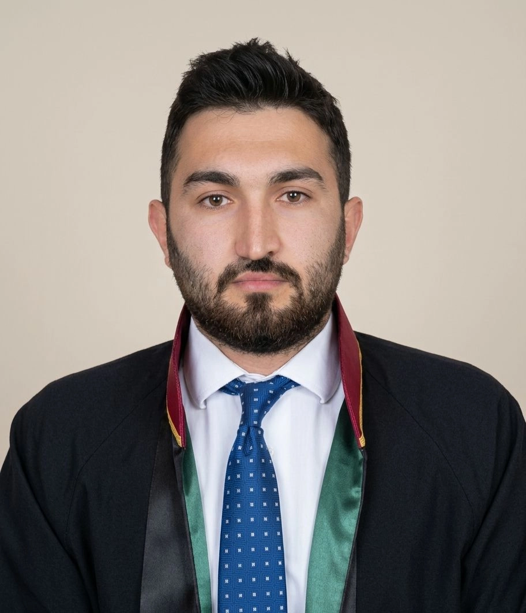

Uşak Aile Hukuku Avukatı
Boşanma sürecinde hak kaybı yaşamamak için deneyimli hukuki destek alın. Av. M. Eşref Salgür ile süreci güvenle ve stratejik şekilde yönetin.

Boşanma süreci, hem duygusal hem de hukuki açıdan son derece hassas bir dönemdir. Bu süreçte doğru adımları atmak, hak kayıplarını önlemek ve geleceğe güvenle bakabilmek için profesyonel destek almak büyük önem taşır.
Özellikle boşanma davalarının Türk Medeni Kanunu çerçevesinde yürütüldüğü dikkate alındığında, tarafların yasal haklarını doğru şekilde koruyabilmesi için uzman bir avukata ihtiyaç duyulmaktadır.
Boşanma sadece bir evliliğin sona ermesi değil; velayet, nafaka ve mal paylaşımı gibi hayatınızın geri kalanını şekillendirecek yeni bir dönemin başlangıcıdır. Uşak boşanma avukatı Av. M. Eşref Salgür, bu hassas dönemde duygusal yükünüzü hafifletirken hukuki haklarınızı en üst düzeyde savunmayı ilke edinir.Boşanma sürecinde bizim için ilk adım, dosya hazırlamak değil; sizi gerçekten anlamaktır. Bu nedenle sürece evraklarla değil, sizi dinleyerek başlıyoruz. Yaşadığınız süreci tüm yönleriyle ele alıyor, olayları aceleye getirmeden ve detayları atlamadan değerlendiriyoruz. Uşak'ta boşanma avukatı olarak; hangi yaşananların hukuken dava konusu yapılabileceğini, hangilerinin mahkemede karşılık bulmayacağını açıkça anlatıyoruz. Karşı tarafın muhtemel iddia ve savunmalarını önceden öngörerek, lehinize ve aleyhinize olabilecek ihtimalleri dürüstçe paylaşıyoruz.
Deneyimli boşanma avukatı M. Eşref Salgür, Uşak'ta müvekkillerinin haklarını koruyarak en iyi hukuki çözümleri üretmektedir. Bilgi birikimi ve tecrübesiyle anlaşmalı boşanma süreçlerini hızlandırmakta, çekişmeli boşanma davalarında ise müvekkillerinin haklarını en güçlü şekilde savunacak stratejiler geliştirmektedir. Uşak'ta boşanma avukatı arıyorsanız Avukat M. Eşref Salgür hukuki süreciniz boyunca müvekkil odaklı yaklaşımıyla yanınızdadır.
Uşak merkez dışında Banaz, Eşme, Karahallı, Sivaslı, Ulubey ve Çivril ilçelerinde yaşayan müvekkillerimize de boşanma davaları, nafaka davaları ve velayet davalarında hukuki danışmanlık sağlamaktayız. Uşak aile mahkemelerinde açılan davalarda yerel uygulamalar doğrultusunda profesyonel temsil sunulmaktadır.
Uşak merkez başta olmak üzere Banaz, Eşme, Karahallı, Sivaslı ve Ulubey ilçelerinde açılan boşanma davalarında müvekkillerimize hukuki destek sunuyoruz. Uşak aile mahkemelerinde yürütülen çekişmeli ve anlaşmalı boşanma davalarında yerel mahkeme uygulamaları ve güncel Yargıtay içtihatları doğrultusunda stratejik bir dava yönetimi gerçekleştiriyoruz.
Uşak'ta boşanma süreci hakkında daha detaylı bilgi için boşanma davası nasıl açılır rehberimizi inceleyebilirsiniz.Boşanma davaları, yerel mahkeme uygulamaları ve hakimlerin içtihatlarına göre farklılık gösterebilir. Uşak yerel hukuk dinamiklerine hakim olan ekibimizle şu avantajları sağlıyoruz:
Uşak Aile Mahkemeleri'nin çalışma prensiplerine ve bölgedeki yargı pratiğine hakimiyetimiz, dosyanızın daha sağlıklı ilerlemesini sağlar.
Davalarınızı salt duygusal değil, tamamen hukuki ve stratejik bir planlama ile yönetiyoruz. Delillerin zamanında toplanması ve usulüne uygun sunulması için titiz çalışıyoruz.
Sürecin her aşamasında sizi bilgilendiriyor, beklentilerinizi netleştiriyor ve gerçekçi sonuçlar üzerine odaklanıyoruz.
Zina, hayata kast, terk veya evlilik birliğinin sarsılması nedenli boşanma davalarında etkili delil sunumu ve tanık yönetimi ile profesyonel dava takibi.
çekişmeli boşanma süreci hakkında detaylı bilgi için ilgili sayfamızı ziyaret edebilirsiniz.Tek celsede boşanma için hak kaybı içermeyen, titizlikle hazırlanmış anlaşmalı boşanma protokolü hazırlanması ve dava takibi.
Yoksulluk nafakası, iştirak nafakası ve tedbir nafakası talepleri ile maddi ve manevi tazminat süreçlerinin yürütülmesi.
Çocuğun üstün yararı ilkesi doğrultusunda velayet davaları ve kişisel ilişki kurulması konularında hukuki destek.
Yurt dışında boşanan kişilerin Türkiye’de de boşanmış sayılması için dava açılması
Şiddet gösteren eşin evden uzaklaştırılması davalarının açılması ve takibi.
Boşanma davaları yalnızca bir evliliğin sona ermesi anlamına gelmez. Aynı zamanda velayet, nafaka, mal paylaşımı ve tazminat gibi birçok hukuki konuyu da kapsayan kapsamlı bir süreçtir. Bu nedenle boşanma sürecinin hukuki açıdan doğru yönetilmesi büyük önem taşır. Uşak boşanma avukatı desteği ile yürütülen bir boşanma davası, tarafların hak kaybı yaşamadan süreci tamamlamasına yardımcı olur.
Boşanma sürecinde yapılan küçük hatalar ilerleyen aşamalarda ciddi sonuçlar doğurabilir. Dava dilekçesinin hazırlanması, delillerin sunulması, tanıkların belirlenmesi ve mahkeme sürecinin doğru şekilde yürütülmesi profesyonel bir hukuki yaklaşım gerektirir. Uşak boşanma avukatı olarak müvekkillerimize sürecin her aşamasında kapsamlı hukuki destek sunulmaktadır.
Anlaşmalı boşanma, eşlerin boşanmanın tüm sonuçları üzerinde uzlaşması halinde açılan bir boşanma davasıdır. Türk Medeni Kanunu’na göre anlaşmalı boşanma için evliliğin en az bir yıl sürmüş olması gerekir. Taraflar velayet, nafaka, tazminat ve mal paylaşımı gibi konularda anlaşarak bir protokol hazırlar ve mahkemeye sunar.
Anlaşmalı boşanma protokolünün doğru hazırlanması oldukça önemlidir. Eksik veya hukuka aykırı düzenlenen protokoller mahkeme tarafından kabul edilmeyebilir. Uşak boşanma avukatı tarafından hazırlanan protokoller, tarafların haklarını koruyacak şekilde düzenlenir ve davanın tek celsede sonuçlanma ihtimali artar.
Uşak aile mahkemelerinde açılan anlaşmalı boşanma davaları çoğu zaman kısa sürede sonuçlanmaktadır. Ancak mahkeme hakimi, tarafların özgür iradeleriyle anlaşma yapıp yapmadığını ve protokolün hukuka uygun olup olmadığını inceleyerek karar verir.
Tarafların boşanmanın sonuçları konusunda anlaşamadığı durumlarda çekişmeli boşanma davası açılır. Bu davalarda tarafların iddialarını ve boşanma sebeplerini mahkemeye sunmaları gerekir. Zina, terk, hayata kast, kötü muamele veya evlilik birliğinin temelinden sarsılması gibi sebepler çekişmeli boşanma davalarında sıklıkla görülmektedir.
Çekişmeli boşanma davalarında deliller büyük önem taşır. Tanık beyanları, mesaj kayıtları, fotoğraflar ve diğer belgeler mahkeme tarafından değerlendirilebilir. Bu nedenle dava açılmadan önce güçlü bir hukuki strateji belirlenmesi gerekir.
Uşak boşanma avukatı desteği ile yürütülen çekişmeli boşanma davalarında delillerin doğru şekilde sunulması ve tanıkların etkili biçimde değerlendirilmesi davanın seyrini önemli ölçüde etkileyebilir.
Boşanma davalarında en hassas konulardan biri velayet meselesidir. Mahkeme velayet kararını verirken çocuğun üstün yararı ilkesini esas alır. Çocuğun yaşı, eğitim durumu, yaşam koşulları ve ebeveynlerin çocuğa sağlayabileceği imkanlar değerlendirilir.
Mahkeme gerektiğinde sosyal inceleme raporu talep edebilir ve uzman görüşlerinden yararlanabilir. Velayet davalarında ebeveynlerin çocuğun gelişimine katkı sağlayacak yaşam koşullarını sunabilmesi önemli bir faktördür.
Uşak boşanma avukatı tarafından yürütülen velayet davalarında hem çocuğun hakları hem de müvekkilin hukuki menfaatleri titizlikle korunmaktadır.
Boşanma davalarında tarafların ekonomik durumları da değerlendirilir. Mahkeme gerekli gördüğü durumlarda tedbir nafakası, iştirak nafakası veya yoksulluk nafakası kararı verebilir. Nafaka miktarı belirlenirken tarafların gelir durumu, yaşam standartları ve ihtiyaçları dikkate alınır.
Nafaka davalarında doğru hukuki taleplerin ileri sürülmesi oldukça önemlidir. Uşak boşanma avukatı tarafından yürütülen nafaka davalarında müvekkilin ekonomik haklarının korunması amaçlanır.
Evlilik süresince edinilen malların paylaşımı da boşanma sürecinin önemli konularından biridir. Türk Medeni Kanunu’na göre eşler arasında edinilmiş mallara katılma rejimi uygulanır. Bu kapsamda ev, araç, banka hesapları ve diğer malvarlıkları paylaşım sürecine dahil edilir.
Mal paylaşımı davaları çoğu zaman teknik ve karmaşık süreçler içerir. Bu nedenle profesyonel hukuki destek alınması hak kayıplarının önlenmesi açısından büyük önem taşır.
Boşanma davası açmak için öncelikle bir boşanma dilekçesi hazırlanması gerekir. Anlaşmalı boşanma davalarında ayrıca boşanma protokolü de mahkemeye sunulur. Nüfus kayıt örneği ve kimlik bilgileri gibi belgeler de dava dosyasına eklenmektedir.
Boşanma sürecinde delillerin eksiksiz şekilde hazırlanması davanın daha sağlıklı ilerlemesini sağlar. Bu nedenle dava açılmadan önce kapsamlı bir hukuki hazırlık yapılması önerilir.
Boşanma süreci birçok kişi için hem hukuki hem de duygusal açıdan zorlayıcı olabilir. Bu süreçte deneyimli bir avukat desteği almak, hakların korunması ve sürecin daha hızlı ilerlemesi açısından önemli avantaj sağlar.
Uşak boşanma avukatı olarak müvekkillerimize boşanma davaları, velayet davaları, nafaka davaları ve mal paylaşımı davalarında profesyonel hukuki danışmanlık sunulmaktadır. Her dava kendine özgü koşullar içerdiği için hukuki strateji de buna göre belirlenmektedir.
Dava yol haritası belirlenir ve deliller titizlikle hazırlanır.
Hukuki temeli güçlü dilekçeler ile boşanma davası açılır.
Geçici velayet, nafaka ve uzaklaştırma gibi tedbir kararları talep edilir.
Mahkeme nezdinde profesyonel temsil ve savunma yapılır.
Uşak'ta boşanma davası açmak için aile mahkemesine bir boşanma dilekçesi sunulması gerekir. Anlaşmalı boşanma davalarında tarafların hazırladığı boşanma protokolü ile birlikte başvuru yapılırken, çekişmeli boşanma davalarında ise deliller ve tanıklar dilekçede belirtilmelidir.
Anlaşmalı boşanma davaları, başvurudan itibaren ortalama 1-2 ay içinde sonuçlanırken, çekişmeli boşanma davaları 1 ila 3 yıl sürebilir. Süre, tarafların anlaşmazlık derecesine ve mahkemenin yoğunluğuna bağlı olarak değişir.
Hukuken avukat tutma zorunluluğu yoktur, ancak hukuki bilgi ve tecrübe gerektiren bu süreçte bir boşanma avukatı ile çalışmak hak kaybı yaşanmaması açısından önemlidir.
Mahkeme velayet kararını verirken "çocuğun üstün yararı" ilkesini esas alır. Çocuğun yaşı, eğitim durumu ve ebeveynlerin sunduğu yaşam koşulları uzman pedagoglar eşliğinde değerlendirilerek karar verilir.
Dava devam ederken, ekonomik olarak zorluğa düşecek olan eş ve çocuklar için mahkemenin hükmettiği geçici nafaka türüdür. Karar kesinleşene kadar ödenmeye devam eder.
Evet, Türk Medeni Kanunu'na göre anlaşmalı boşanma davası açabilmek için evliliğin en az 1 yıl sürmüş olması yasal bir zorunluluktur. 1 yıldan kısa süren evliliklerde dava çekişmeli olarak açılmalıdır.
Yabancı mahkemelerden alınan kararlar Türkiye'de kendiliğinden geçerli olmaz. Bu kararların nüfus kaydına işlenmesi için "Tanıma ve Tenfiz" davası açılması veya idari yoldan tescil edilmesi gerekir.
2002 sonrası evliliklerde yasal olarak "Edinilmiş Mallara Katılma Rejimi" uygulanır. Evlilik birliği içinde alınan mallar, kural olarak yarı yarıya paylaşılır; ancak kişisel mallar (miras, bağış vb.) bu paylaşıma dahil edilmez.
Dava dilekçesini hazırlar, delilleri toplar, tanık yönetimini sağlar ve duruşmalarda müvekkilini temsil eder. Hak kaybını önlemek için süreci stratejik olarak yönetir.
Davayı kimin açtığından ziyade, kimin iddialarını daha güçlü delillerle ispatladığı önemlidir. Haklı olan taraf süreci avantajlı yönetir; öncelik-sonralık farkı hukuken yoktur.
Eğer kadın haklı bir sebeple (şiddet, geçimsizlik vb.) evi terk etmişse ve bunu ispatlarsa tazminat alabilir. Ancak haksız yere terk durumu varsa tazminat hakkını kaybedebilir.
Hukuka uygun şekilde elde edilmiş WhatsApp, SMS ve sosyal medya yazışmaları mahkemede delil olarak sunulabilir. Ancak gizli kamera veya casus yazılım gibi yasadışı yollarla elde edilen veriler delil sayılamaz.
Karşı taraf boşanmak istemese dahi, davacı eş evlilik birliğinin temelden sarsıldığını veya yasal bir boşanma sebebinin varlığını kanıtlarsa mahkeme boşanma kararı verebilir.
Çekişmeli davalarda olayların ispatı için tanık beyanları hayati önem taşır. Hangi tanığın hangi konuda beyanda bulunacağı stratejik olarak belirlenmelidir.
6284 Sayılı Kanun kapsamında derhal uzaklaştırma ve koruma kararı alınmalıdır. Bu süreç boşanma davası ile birlikte eş zamanlı yürütülebilir ve hayati öneme sahiptir.
Maliyetler davanın türüne (anlaşmalı/çekişmeli) göre değişir. Mahkeme harçları, gider avansı ve avukatlık ücretleri hakkında ofisimizden güncel bilgi alabilirsiniz.
Hukuk sistemimizde "en iyi" şeklinde bir ölçüt yoktur. Seçim yaparken avukatın deneyimi, önceki dava başarıları ve kurulan güven ilişkisi temel alınmalıdır.
Karahallı ilçesinde meydana gelen adli olaylar ve boşanma davaları ile ilgili işlemler Sivaslı Adliyesi bünyesinde yürütülmektedir.